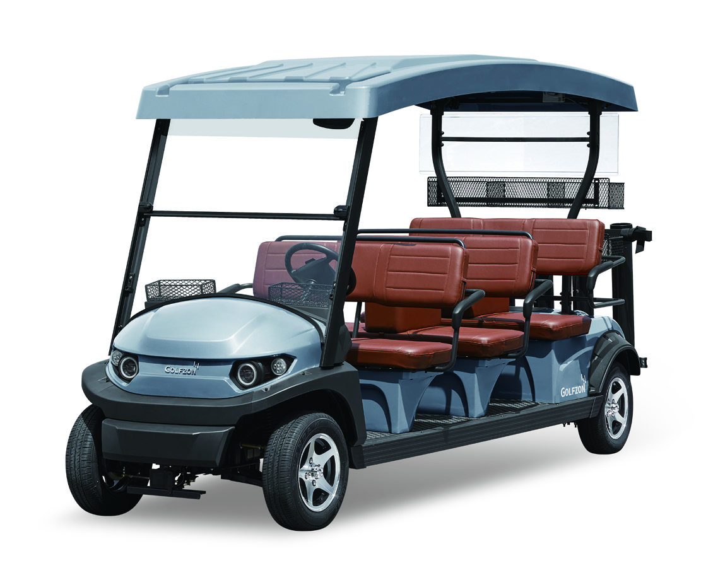

Jason
CEO골프와 IT를 연결하는 경영·기술 경험
- 전 골프존 CTO · 개발본부장
- 전 골프존 GDR아카데미 CEO
- 전 뉴딘콘텐츠 CEO

WHO WE ARE
BlueT Golf는 골프와 IT, 카트 사업을 경험한 전문가들이 모인 팀입니다.
15년 이상 쌓아온 골프 시장에 대한 이해를 바탕으로, 제품 기획부터 현장 운영과 서비스까지 연결합니다. 매일의 라운드에서 출발해 골프장의 새로운 가능성을 준비합니다.
골프와 IT를 연결하는 경영·기술 경험
골프 사업 전략부터 카트 사업화까지
OUR APPROACH
01 CART
골퍼의 이동이 더 편안하고
즐거운 경험이 되도록,
카트를 다시 생각합니다.
02 AUTONOMOUS
사람과 기술이 조화를 이루는
자율주행 기반의 이동으로,
골프장의 가능성을 넓혀갑니다.
03 PHYSICAL AI
데이터와 현장의 경험을 연결해,
더 효율적이고 지속 가능한
골프장 운영을 준비합니다.
NEWS & NOTICE
소식을 불러오고 있습니다.
골프 현장에 대한 이해와 기술을 연결해,
골퍼와 운영자 모두에게 더 나은 일상을 만들어갑니다.
A BETTER
TOMORROW
FOR GOLF
도입 및 사업 협력 문의
bluetgolf@bluetgolf.com